Carino coffe & Bakery
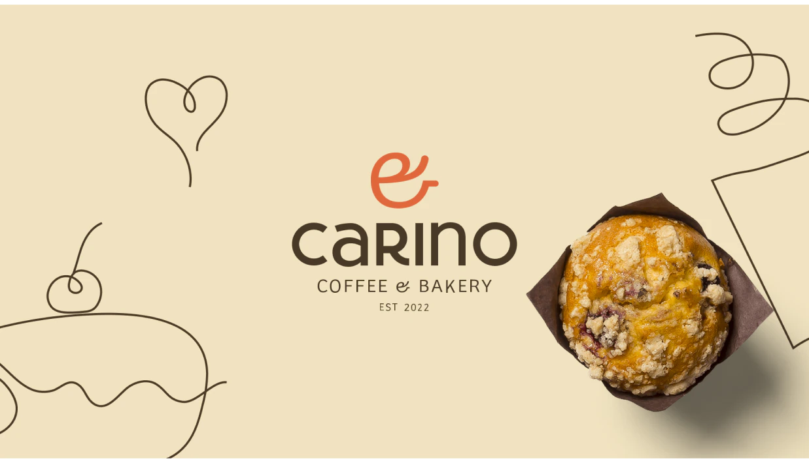
- Cliente
- Carino Coffee
- Ano
- 2022
- Projeto
- Brand Design
Carino coffe & Bakery
Carino Coffee & Bakery está localizado no bairro de Belgrano, em Buenos Aires. É uma cafeteria onde todos os cafés e produtos de padaria são feitos com cuidado, garantindo qualidade. É minimalista, delicado, moderno e sofisticado.
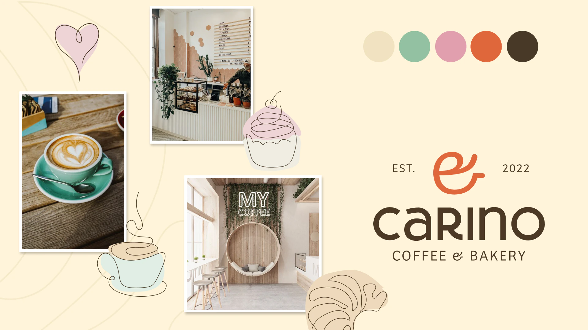
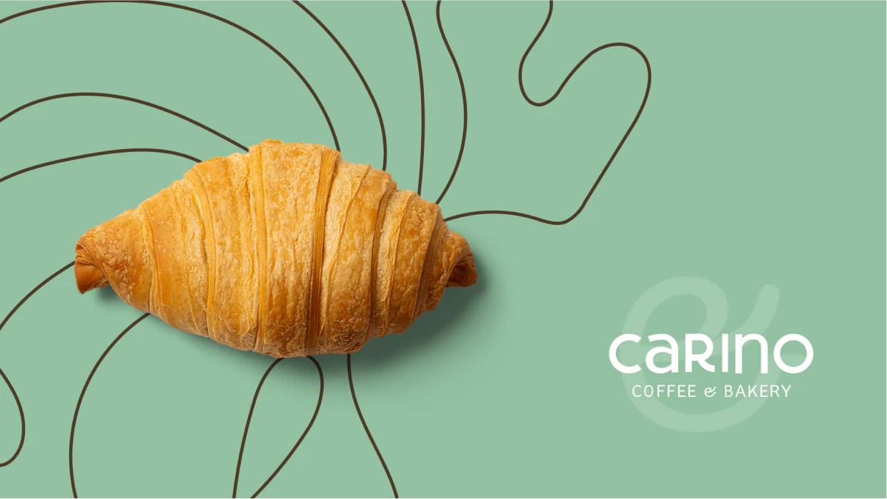
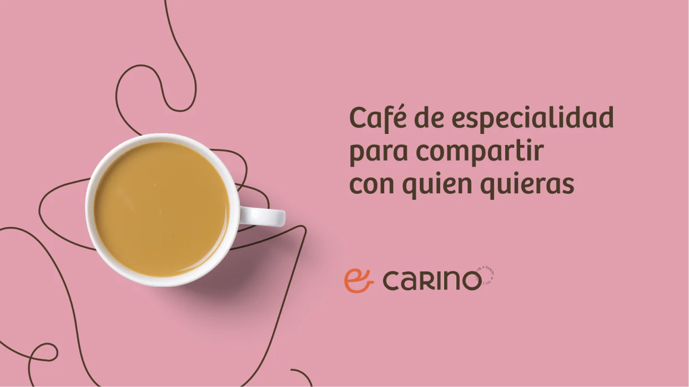
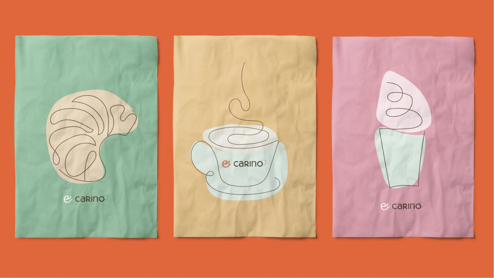
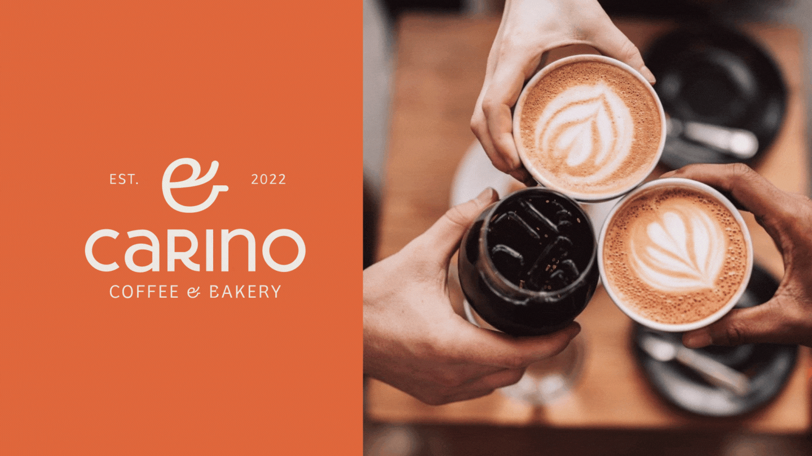
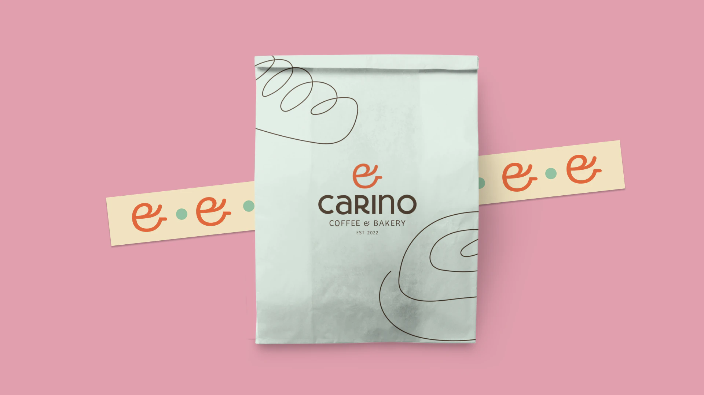

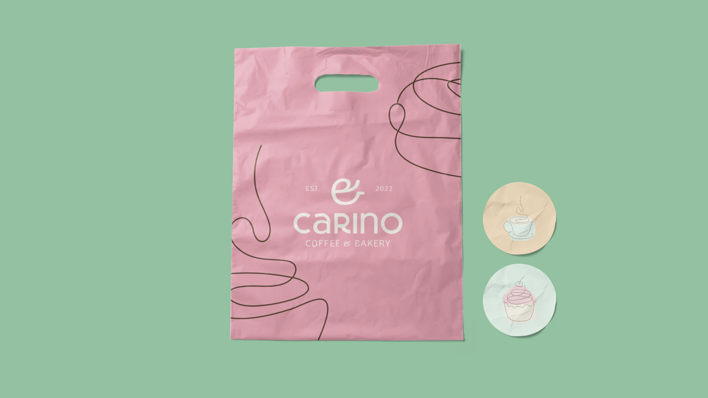
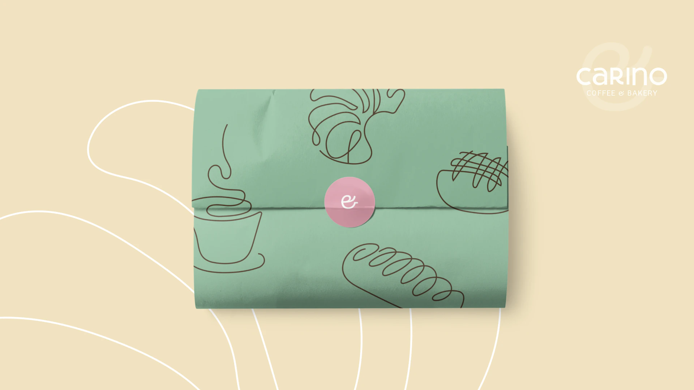
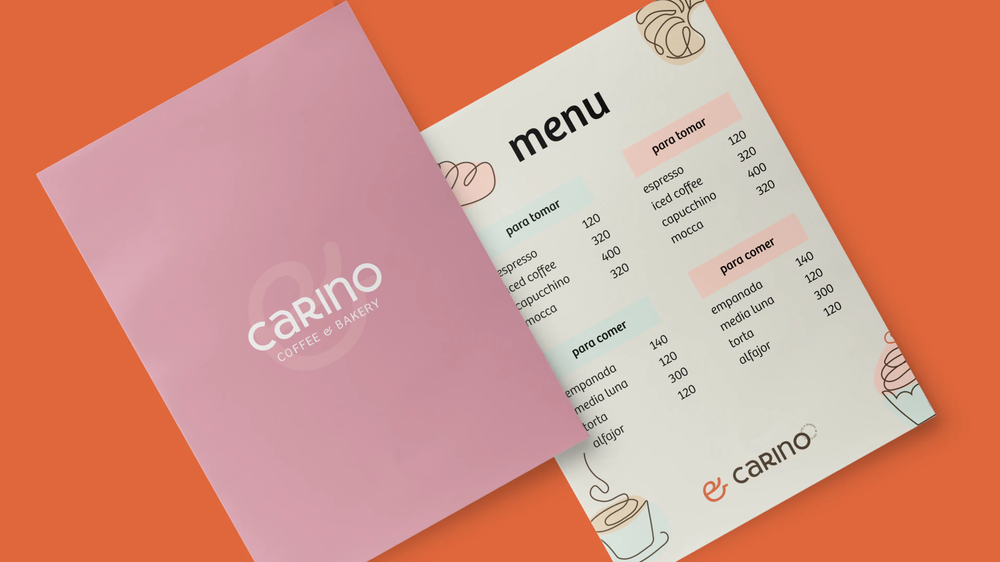
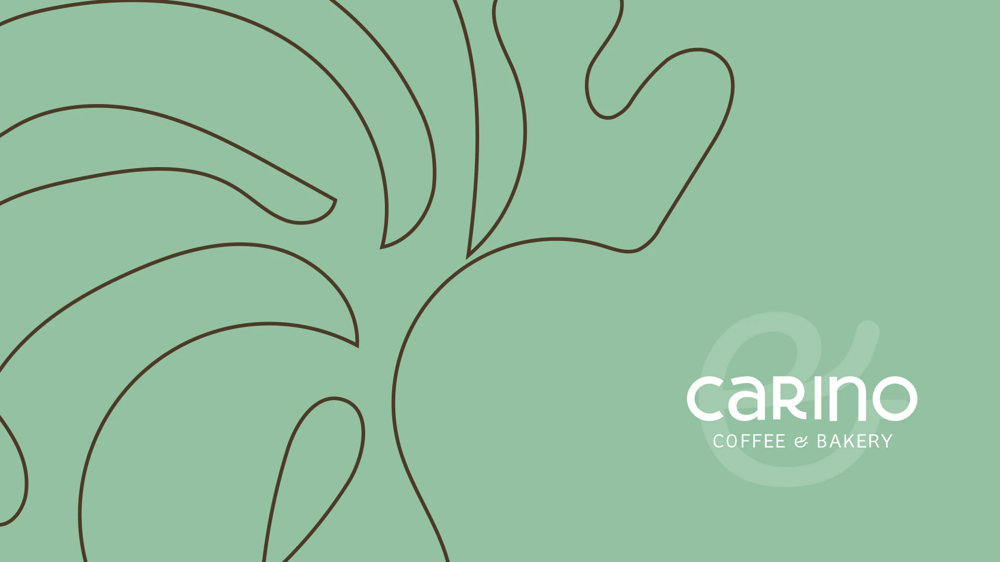